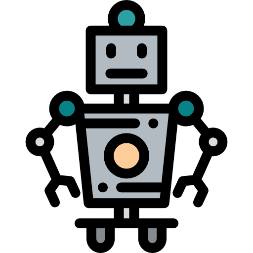

IA aplicada en la educación --> Hecho por Karen Villafuerte
La Inteligencia Artificial en la educación ofrece numerosas posibilidades para agregar más valor a los estudiantes, facilitar el proceso enseñanza-aprendizaje y mejorar el posicionamiento de las instituciones educativas. Utilizar estas innovaciones en tu institución educativa (IE) puede traer múltiples ventajas.
Ir a --> Inteligencia Artificial en la educación IA, una ayuda para la medicina --> Hecho por Rafael Martinez
IA, una ayuda para la medicina --> Hecho por Rafael Martinez
La Inteligencia Artificial en medicina nos será útil para procesar la abundancia de datos y facilitar su decisión diagnóstica y terapéutica. Desde otra perspectiva, hay oportunidades donde la inteligencia artificial no solo analiza sino que al recibir la información actúa. Este campo es de más complejidad.
Inteligencia Artificial con la medicina IA en funcion con los alimentos --> Hecho por Diego Garcia
IA en funcion con los alimentos --> Hecho por Diego Garcia
A nivel global ya existen desarrollos que prometen detectar, incluso en los aparatos de las cocinas y los platos, cuando un alimento esté contaminado; mapear una colonia de bacterias en el suelo, para impedir su proliferación; o hacer dobles digitales de un campo y sus cultivos, para evaluar qué hacer y cómo optimizar el agua y no desgastar el suelo.
Inteligencia Artificial aplicada en los alimentos IA para los robots y su impacto --> Hecho por Dulce Rodriguez
La Inteligencia Artificial (IA) y la robótica son una poderosa combinación para la automatización de tareas dentro y fuera de la configuración de fábrica. En los últimos años, la IA se ha convertido en una presencia cada vez más común en soluciones robóticas, introduciendo flexibilidad y capacidades de aprendizaje en aplicaciones previamente rígidas.
Inteligencia Artificial sobre la Robótica y Mecatrónica IA aplicada en los juegos--> Hecho por Jose Frutos
IA aplicada en los juegos--> Hecho por Jose Frutos
Inteligencia artificial, abreviado IA, en un videojuego, se refiere a las técnicas utilizadas en computadoras y videojuegos para producir la ilusión de inteligencia en el comportamiento de los personajes no jugadores (PNJ).
Inteligencia Artificial en desarrollo de Juegos IA para la realidad virtual--> Hecho por Alexis Martinez
IA para la realidad virtual--> Hecho por Alexis Martinez
Estas tecnologías representan un gran cambio no solamente en cómo percibimos los procesos de negocio, sino también en nuestra vida cotidiana. De esas tecnologías veremos especialmente cómo la Inteligencia Artificial y la Realidad Aumentada pueden combinarse a la hora de crear nuevas aplicaciones que impacten positivamente en la sociedad.
Inteligencia Artificial como parte de la Realidad VirtualIA implementada en los humanos --> Hecho por Erik Guzman
La Estimulación Cerebral Profunda es un ejemplo de que la implantación de electrodos en el cerebro humano ha dejado de ser ciencia ficción y podría convertirse en un tratamiento efectivo — se encuentra en fase de experimentación— para enfermedades neurodegenerativas.
Inteligencia Artificial aplicada en Humanos IA para las computadoras cuanticas y la singularidad --> Hecho por Alexander Lopez
IA para las computadoras cuanticas y la singularidad --> Hecho por Alexander Lopez
La computación cuántica o informática cuántica es un paradigma de computación distinto al de la informática clásica o computación clásica. Se basa en el uso de cúbits, una especial combinación de unos y ceros.
Inteligencia Artificial implementada en la Computación Cuántica y en la Singularidad